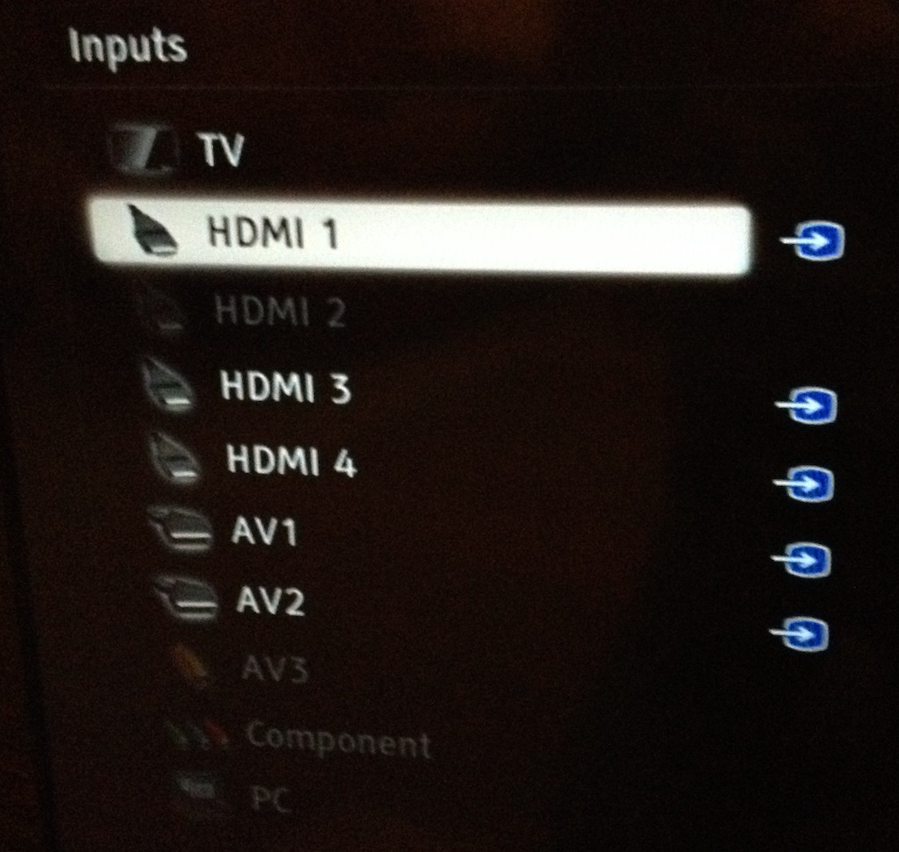
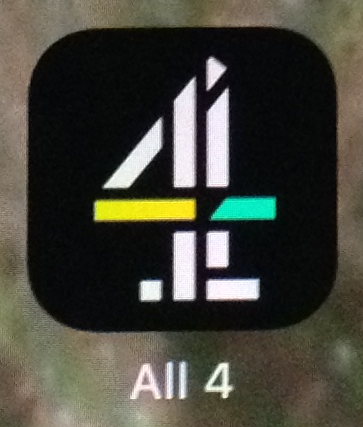
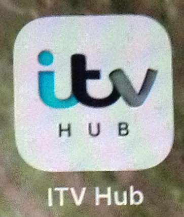
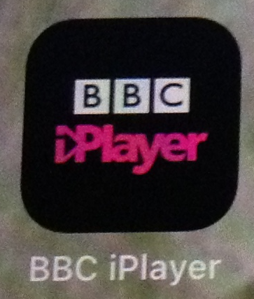

We do not have a TV aerial, so use either a FreeSat satellite box for live TV or a Chromcast device to access the various 'catchup' TV services. Both devices are connected to the TV via HDMI (High Definition Multimedia Interface), the FreeSat box being plugged in at the rear of the TV using a cable and Chromecast plugged into an HDMI port on the side. Chromecast also has a USB (Universal Serial Bus) connection, which is simply used to provide power to the device.
So to use either of these devices, the TV needs to use the appropriate HDMI port. Freesat is plugged into HDMI 1 and Chromecast into HDMI 4. When you 'Cast' (see 'Watching Catchup' below) the appropriate HDMI port is automatically selected. However, when you want to go back to the Freesat box you need to manually select HDMI 1.
To chose which input device to show on the screen you need to select the HDMI port. To do this you need to use the TV remote control, a photo of which is to the right.
The process is simple, but you need to be quite quick, since the display on the screen doesn't stay there very long. With the TV turned on, you press the top left-hand button on the remote to display the list of inputs, with the currently selected input highlighted. The button at the centre of the group of circles is the Enter/Go/OK button and the ring of four buttons around it are the move up/right/down/left buttons. The up and down buttons move the selection of the inputs and so you move to HDMI 1 for the Freesat box. Then you press Enter. If the display of inputs disappears then you need to press the top-left button on the remote again.
So that is:
There are a number of catchup TV apps that can be found on the iPad. They are:
  They all work slightly differently and offer different facilities. Having selected a programme you can either watch it on the iPad or 'cast' the programme to the TV via Chromecast. They all use a similar method to cast and all have the same cast symbol (far right). If you tap it then another window opens with a lit of devices to which you can cast. In our case there is only one option, Sitting Room TV. Tapping that starts the cast and you can then start the programme by tapping the 'play' symbol, which looks similar to this.
Starting the cast is easy, it switches to the correct HDMI port automatically, but when the programme has finished and you tap 'Stop casting', the TV does not automatically return to HDMI 1. Therefore you need to follow the process above to get back to HDMI 1.
© David James 2021 Last updated: 6th January 2021